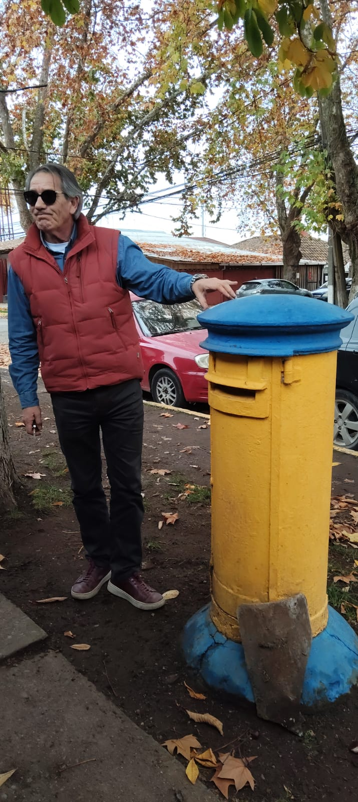

El primer acercamiento
A los 8 años comienza su pasión por la filatelia.
COLECCIÓN · HISTORIA · MEMORIA POSTAL
Más de cinco décadas dedicadas a la filatelia, la historia postal y a compartir una pasión que comenzó en la infancia.
Explorar colección →EL COMIENZO
En 1972, Yerko Canales Rojas comenzó a acercarse al mundo de la filatelia. Lo que nació como una afición infantil se transformó, con el paso de los años, en una vida dedicada a coleccionar, investigar, preservar y compartir la historia que existe detrás de cada pieza postal.
Desde su primera exposición en 1974 hasta su participación actual en comunidades filatélicas nacionales e internacionales, su trayectoria es también una historia de perseverancia, curiosidad y amor por la memoria postal.
BIOGRAFÍA
Más de cinco décadas de pasión por la filatelia y la historia postal.

La historia filatélica de Yerko comienza en 1972, cuando tenía apenas 8 años. Desde sus primeros acercamientos descubrió que detrás de una pequeña estampilla existía mucho más que una imagen y un valor postal: había personajes, acontecimientos, lugares, cultura e historias capaces de viajar de un país a otro.
En 1974, con solo 10 años, exhibió por primera vez una colección de temática espacial. Aquella experiencia fue un punto de inflexión: la filatelia dejó de ser solamente un pasatiempo personal y comenzó a convertirse en una forma de compartir conocimiento y relacionarse con otros coleccionistas.
Posteriormente ingresó al Círculo Filatélico de Valdivia, continuando su aprendizaje y fortaleciendo su vínculo con la actividad filatélica.
Más tarde se trasladó a vivir a Parral. En 1977, junto a otros niños, participó en la formación del que sería el primer club filatélico juvenil de Parral, iniciativa que fue reconocida por la Sociedad Filatélica de Chile.
Con el paso de las décadas, su colección fue creciendo y también ampliando su mirada. Yerko no se limitó a reunir estampillas: incorporó cartas, sobres, documentos, accesorios, elementos de uso postal y piezas relacionadas con Correos de Chile, construyendo una colección que busca conservar una parte de la historia de las comunicaciones.
Hoy continúa participando activamente en la comunidad filatélica, manteniendo su vínculo con la Sociedad Filatélica de Chile y participando en Mi Oficina Philatelic Society, una comunidad internacional que conecta a aficionados de aproximadamente 22 países y desarrolla charlas y encuentros virtuales. Esta actividad se aproxima ya a las 1.000 charlas compartidas.
TRAYECTORIA
A los 8 años comienza su pasión por la filatelia.
Presenta su primera colección, dedicada a la temática espacial.
Ingresa al Círculo Filatélico de Valdivia y continúa desarrollando sus conocimientos.
Junto a otros niños forma un club filatélico juvenil, reconocido por la Sociedad Filatélica de Chile.
Actualmente radica en Chillán, Región de Ñuble, Chile, desde donde continúa reuniendo piezas, investigando la historia postal y compartiendo la filatelia en Chile y el extranjero.
GALERÍA
Una primera selección de piezas y registros. La galería continuará creciendo.
COMUNIDAD FILATÉLICA
Yerko mantiene una participación activa en la Sociedad Filatélica de Chile y forma parte de Mi Oficina Philatelic Society, comunidad internacional vinculada a la difusión de la filatelia.
Con participantes de aproximadamente 22 países, esta comunidad utiliza herramientas digitales para realizar charlas y encuentros. La experiencia acumulada se acerca a las 1.000 charlas, llevando la conversación filatélica mucho más allá de las fronteras.
“Cada sello cuenta una historia. Cada carta conserva un recuerdo.”— Una colección construida a través de los años
OCTUBRE · MEMORIA POSTAL
El 8 de octubre se celebra el Día de la Carta y el 28 de octubre el Día del Cartero. Son fechas que permiten recordar el valor de la correspondencia y de quienes hicieron posible que las cartas llegaran a destino.
La colección de Yerko dialoga especialmente con esa memoria: cada pieza postal es una pequeña evidencia de una época en que las palabras viajaban por correo y esperaban su encuentro con un destinatario.
CONTACTO
Este sitio está pensado para seguir creciendo. Próximamente se podrán incorporar información detallada de las piezas, exposiciones, documentos y nuevas fotografías.